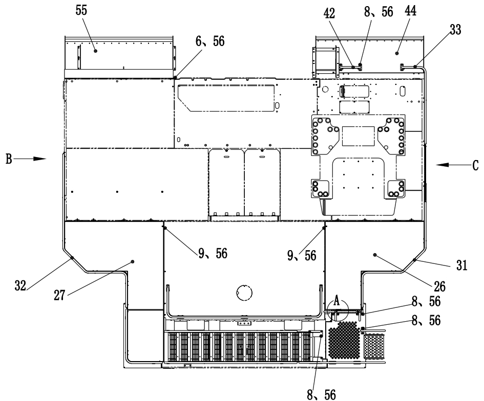
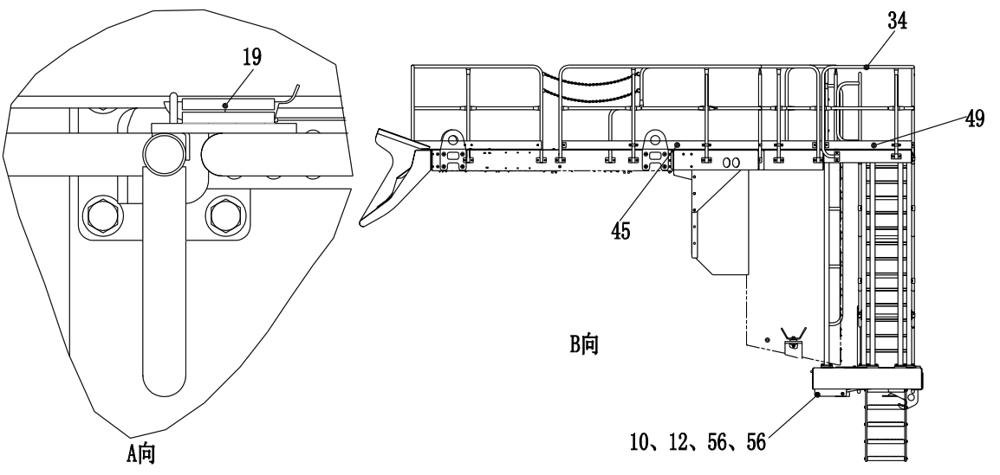
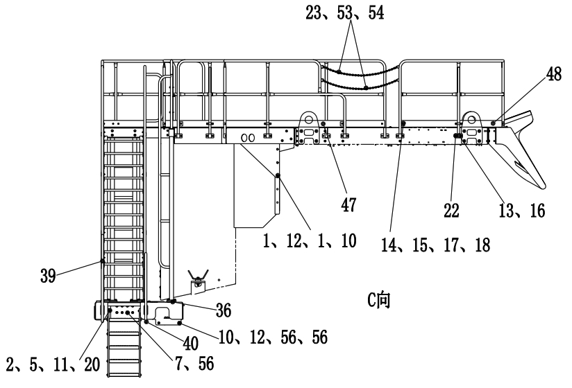
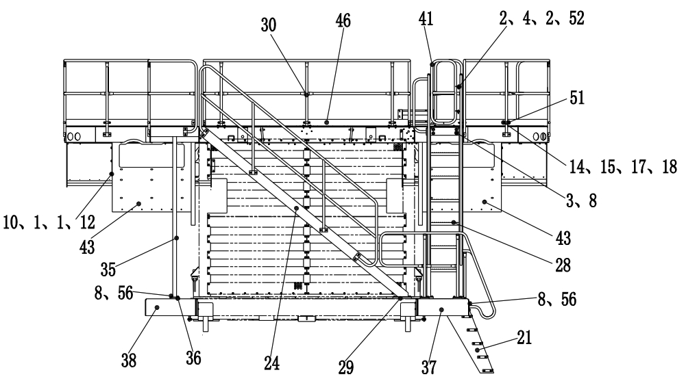
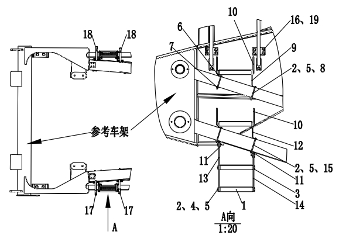

梯子和护栏安装. · LADDER AND RAILING MOUNTING
Лестницы и ограждения
Описание и расположение
Стандартная платформенная лестница (24) представляет собой ступенчатую лестницу с удлиненными стальными ступенями и поручнями; сверху она соединяется с предварительно закрепленным на платформе сборочным кронштейном (25), снизу закреплена на бампере рамы. Под лестницей платформы установлена гибкая лестница. Место лестницы доступа к платформе с ступенчатой педалью может соответствовать требованиям каждого карьерного самосвала и обеспечивает доступ к платформе и зоне кабины. Лестничная структура с ступенчатой педалью обеспечивает больший доступ к двигателю и к раме с платформы и земли.
Ограждения (30, 31, 32) и сборка двери (41), установленные на платформе, представляют собой трубчатые поручни, а передняя сторона, левая и правая внешние кромки платформы имеют ограждающие устройства.
Ограждение предназначено для защиты работников, работающих со всех сторон платформы.
Лестница для обслуживания и платформа для осмотра и обслуживания двигателя - это рабочие проходы для облегчения доступа обслуживающего персонала к двигателю при проведении ремонтных работ.
Ремонт и регулировка
Регулярное техническое обслуживание может быть выполнено следующим образом:
1. Очистить лестницу и все ограждения.
2. Проверить педали и ограждения на наличие износа. По мере необходимости отремонтировать или заменить.
3. Убедиться, что все крепежные болты и кронштейны надежно и в хорошем состоянии. По мере необходимости затянить, отремонтировать или заменить.
Уставновить лестницы и ограждение в обратном порядке разборки.
4. Проверить нижнюю часть лестницы на наличие износа и незакрепленных деталей, по мере необходимости отремонтировать или заменить.
Снятие (рисунки 1 и 2)
Снять лестницу, сняв монтажные детели, используя дуговую сварку на лестнице, сняв монтажные болты крепления на карьерном самосвале.Ограждение закрепляется на платформе после вставки в рукав. Поднимить ограждение с рукава и завершить снятие ограждения. (Ограждение временно сваривается на своем месте).
Проверка и ремонт
Проверить все детали на наличие износа. По мере необходимости отремонтировать или заменить.
Монтаж (см. рис. 1 и 2)
Уставновить лестницы и ограждение в обратном порядке разборки
Конструкционные детали - лестницы и ограждения
020-0020
Конструкционные детали - лестницы и ограждения
020-0020
2
3
Конструкционные детали - лестницы и ограждения
020-0020
1
Конструкционные детали - лестницы и ограждения
020-0020
4
Дополнения - Масса компонентов
200-0090
Дополнения - Масса компонентов
200-0090
4
3
Направление B
Направление A
Направление C
Спецификация1пружинная шайба18болт35кронштейн сборка52гайка-стопорная2Плоская шайба19штифт36монтажная плита53теплосокращаемая труба3Плоская шайба20прижимная планка37левая сборка кронштейна54карабин для строповки4Болт21сборка лестницы38правая сборка кронштейна55кронштейн брызговика глушителя5Болт22прижимная планка ограждения39сборка ограждения56Плоская шайба6Болт с шестигранной головкой23цепь40сборка поручня577Болт24сборка лестницы41сборка двери588Болт25маленькая платформа42сборка ограждения599Болт26левая сборка платформы43гнутая планка6010Болт27правая сборка платформа44левая сборка кронштейна брызговика6111гайка28сборка лесницы45гнутая планка6212гайка-стопорная29планка46гнутая планка6313Плоская шайба30передняя сборка ограждения.47гнутая планка6414пружинная шайба31левая сборка ограждения48гнутая планка6515гайка32правая сборка ограждения49гнутая планка6616болт33задняя сборка ограждения50планка6717шайба34сборка ограждения51легкий седельный зажим для трубы.68Рис. 1. Монтажная схема лестницы и поручней
Направление А
См. платформу
Спецификация1Педальный узел6кронштейн11кронштейн16болт2плоская шайба7монтажная плита12кронштейн17сборка поручня3планка8шестигранный болт13резиновая плита18сборка поручня4болт9кронштейн14резиновая плта19плоская шайба5гайка-стопорная10ручка15шестигранный болт20Рис. 2. Установка лестницыдля обслуживания и платформа для осмотра и обслуживания двигателя
Иллюстрации




